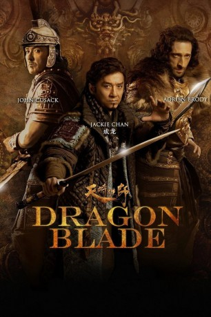
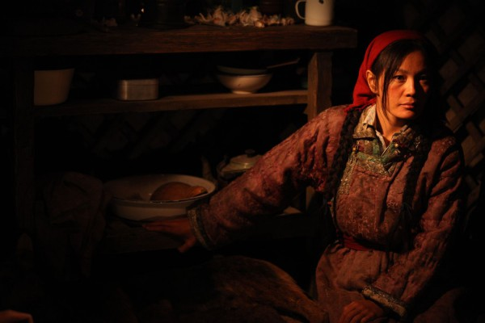

#2777 Dragon Blade
 
 IMDB-Wertung: 6.0 / 10
IMDB-Wertung: 6.0 / 10  Metascore: 41
Metascore: 41 
Während der Han Dynastie befindet sich das chinesische Reich mitten im Krieg zwischen mehreren verfeindeten Clans und Familienbanden. Dabei fällt es einem Kommandeur zu, eine Schutzeinheit aufzustellen, um die westlichen Regionen seines Königreiches gegen anrückende Eindringlinge zu verteidigen. Dabei muss er sich mit einem ungewöhnlichen Partner zusammentun, um die Gefahr abwehren zu können...
Jahr: 2015
Dauer: 127 Minuten
FSK: 16
Land: China Studio: Prorom Media-TradeTonspuren: DD5.1 - ,
Untertitel: Deutsch, Englisch,
Auflösung: 1080p (1920x804) Größe: 11980 MB
Genre: Action, Drama, Abenteuer, Geschichte
Regisseur: Daniel Lee
Drehbuch: Daniel Lee
Soundtrack: Henry Lai
Darsteller:
 Jackie Chan als Huo An
Jackie Chan als Huo An John Cusack als Lucius
John Cusack als Lucius Adrien Brody als Tiberius
Adrien Brody als Tiberius- Si Won Choi als Yin Po
- Peng Lin als Cold Moon
-  Shaofeng Feng als General Huo Qubing
- Sharni Vinson als Lady Crassus
 Tomer Oz als Huo An General
Tomer Oz als Huo An General- Vanness Wu als Christian
- Jozef Waite als Publius
 Ned Bellamy als Octavius
Ned Bellamy als Octavius Paul Philip Clark als Tufus
Paul Philip Clark als Tufus- Joel Adrian als Sertor
- Danny Salay als Paullus
- Ivan Kotik als Roman Soldier
- Alice Aoki als Queen , uncredited
 Jai Day als Deputy Gaius , uncredited
Jai Day als Deputy Gaius , uncredited- James Lee Guy als Eugene , uncredited
- Paul W. He als DuHu , uncredited
- Alfred Hsing als Han Soldier , uncredited
- Max Huang als Shou Xia , uncredited
 Kevin Lee als Roman Solider , uncredited
Kevin Lee als Roman Solider , uncredited Temur Mamisashvili als Roman Soldier , uncredited
Temur Mamisashvili als Roman Soldier , uncredited- Harry Oram als Ceso , uncredited
- Murray Clive Walker als Patrick , uncredited
- Mika Wang als Xin Qing
- Yang Xiao als Captain
- Taili Wang als Rat
- Tin Chiu Hung als Red Sun
- Lorie Pester als Parthian Queen
- Xiang Dong Xu als Secretary
- Qing Xiu als Wolf
- Sung-jun Yoo als Cougar
- Kar Yan Lam als Karena
- Jim Bennett als Stallus
 Philippe Joly als Decimus
Philippe Joly als Decimus- Brahim Achabbakhe als Titus
- Chutian Liu als Student
- Raphael Ollivier als Roman Soldier
- David Peck als Agrippa
- Emrah Yilmaz als Kroraina General
- Pierre Bourdaud als Roman soldier , uncredited
- Alexander Corne als Roman Soldier , uncredited
- Raiden Integra als Roman Soldier , uncredited
- Miroslav Karel als Roman Soldier , uncredited
- Vander McLeod als Tiberius's Roman General , uncredited
- Kyle Shapiro als Roman Soldier , uncredited
- Fatih Ugurlu als Roman General , uncredited
Datei: X:\HD-Eastern-Classic(A-M)\Dragon Blade (2015, FSK16, 1920x804).mkv seit 14.12.2015
Festplatte: HD Eastern+Western
 Es gibt insgesamt 63 Filme in der Gruppe 'HD-Eastern-Classic(A-M)'
Es gibt insgesamt 63 Filme in der Gruppe 'HD-Eastern-Classic(A-M)'